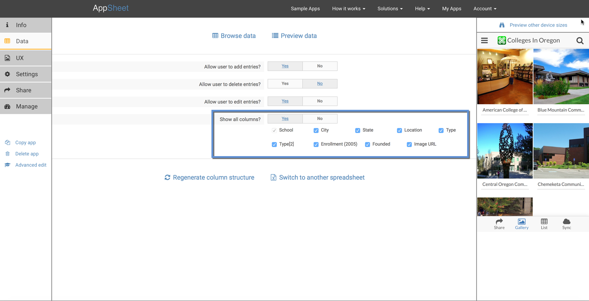
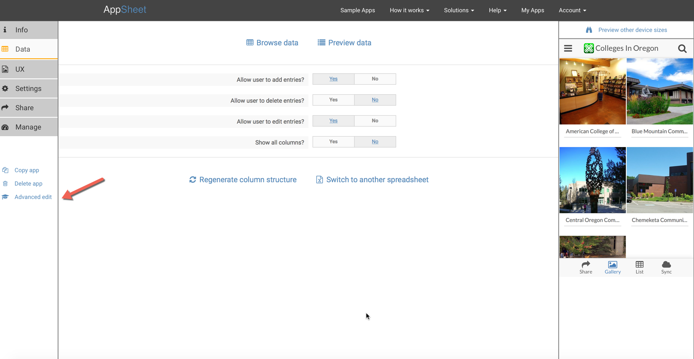
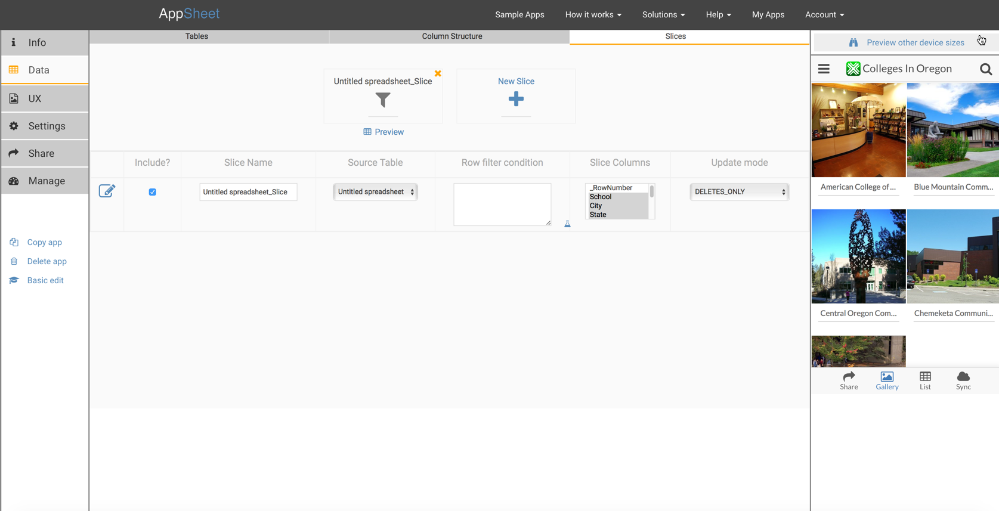

You do not need to send all the spreadsheet data to the app. Instead, you can 'slice' the data, choosing a subset of the columns and a subset of the rows.
By default, the app utilizes all the columns and all the rows. But this is something you can change.
To slice the columns, pick a subset of the columns that will be included. You can do this in both editors.
Basic Editor

To slice the rows, go to the Advanced Editor.

Advanced Editor In the Advanced Editor, Slices to filter rows and/or columns may be added and edited. See Advanced Editor>Data>Slices.

Rich filter conditions
Rich filter conditions give you the ability to express simple or complex criteria. Most commonly, you want to combine a couple of conditions with an AND or an OR. There are two ways to do this:
Insert an AppSheet expression in the Slice Row Filter Condition. This permits you to write slices with rich filter conditions. You may use any arbitrary AND/OR/NOT condition to define the row filter for the slice. For example, to include rows with a DateColumn value in the next 7 days use the following formula: AND([_DateColumn] >= TODAY(), [_DateColumn] < TODAY()+7). To filter on an EmailColumn use this formula: [EmailColumn] = USEREMAIL().